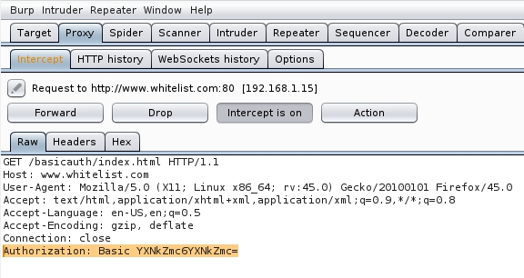

HTTP Basic Authentication
Old and very simply to implement
In HTTP
basic authentication, the client receives an authentication token from the server, which is constructed by
concatenating the username and password, and encoding it in Base64. This token is stored and managed by the browser,
which automatically adds it to the Authorization header of every subsequent request as
follows:
Authorization: Basic base64(username:password)For a number of reasons, this is generally not
considered a secure authentication method. Firstly, it involves repeatedly sending the user's login credentials
with every request. Unless the website also implements HSTS, user credentials are open to being captured in a
man-in-the-middle attack.
Bibliography:
https://portswigger.net/web-security/authentication/password-based